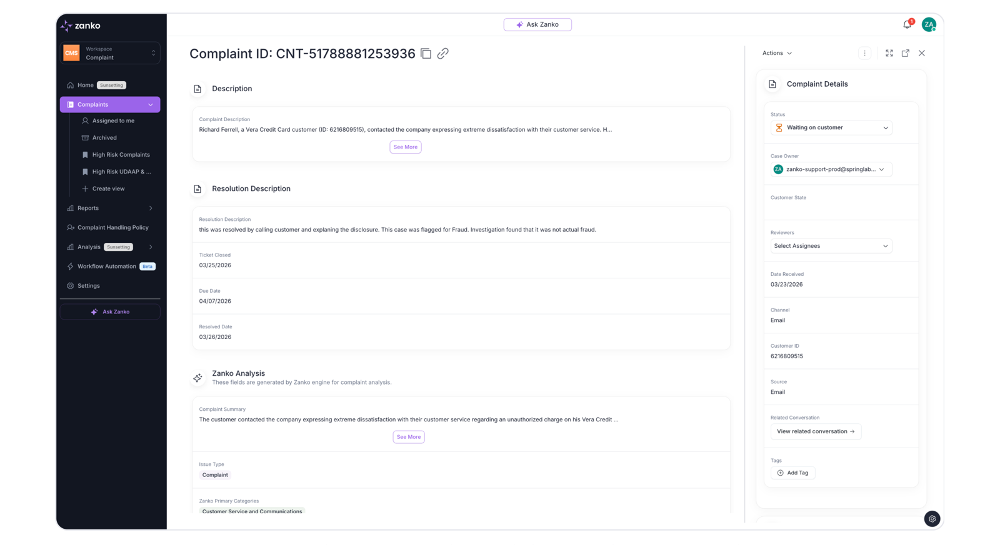
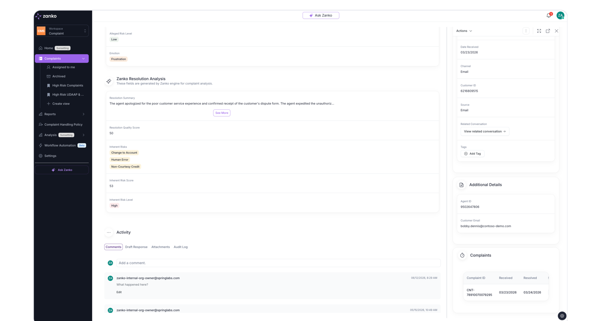

Task 1 · Diagnose & Redesign
Diagnosis of the current Case (Complaint) view, and the reasoning behind the redesign — personas → scenario → requirements → design, so every decision is traceable to a moment in the analyst's day.
Open the redesigned prototype → Skip to the diagnosis
The brief defines the user; these personas make her goals concrete enough to design against. The analyst, the 6 hours/day, and the review → investigate → respond → resolve workflow come from the exercise document; the queue sizes, the SLA framing, and Dana are stated working assumptions — reasonable for regulated complaint operations, and cheap to correct with one customer conversation.
Works a queue of 30–50 open cases, ~6 hours a day in this screen. Expert user by week two — she needs scan speed, not onboarding.
Doesn't work cases day-to-day; audits them after the fact and answers to regulators and the sponsor bank.
Before drawing anything, here is the sequence Maya runs dozens of times a day. Each moment gets an ID so requirements and design elements can cite it.
A requirement with no scenario source didn't make this list; a design element with no requirement doesn't make the screen.
| Req | The screen must… | Trace |
|---|---|---|
| R1 | Show case identity and stakes — customer, product, risk, status, SLA due date — without scrolling. | S1 |
| R2 | Make the complaint readable in full, with long content managed by the reader (generous preview, one expand) — never truncated behind a click by default. | S2 |
| R3 | Present every AI conclusion with its confidence and its reasoning/evidence — never a bare score. | S3 |
| R4 | Let the analyst agree with or override any AI conclusion, with a reason, recorded permanently. | S3 S8 |
| R5 | Show the case's position in its workflow at all times. | S4 |
| R6 | Offer exactly one stage-aware primary action ("what do I do next"), with secondary actions visible but subordinate. | S4 S7 |
| R7 | Put the current stage's workspace inline — e.g., the draft response is the centerpiece when the case is in Respond. | S5 |
| R8 | Keep one unified, filterable activity timeline where comments, AI actions, and system events are equally auditable. | S6 S8 |
| R9 | Maximize scan density: no duplicated fields, no empty decoration, reference metadata quiet but reachable. | S7 |
| R10 | Make SLA state unmissable, and escalate its visibility when a case is at risk or overdue. | S1 S7 |
Credit where due: the left nav is clean and stays out of the way; grouping metadata into a right rail is the correct instinct; "Ask Zanko" is one click from anywhere; and the visual language (calm cards, restrained color) is right for a tool used six hours a day. The redesign keeps all of this. The problems are structural, not cosmetic.
To be fair to the screen: it reads as a generic record-detail template — schema-ordered field rows, likely generated or assembled quickly — and that was probably the right call to get from 4 design partners to 30+ clients fast. The "Sunsetting" and "Beta" badges in the nav suggest a platform mid-migration. But the analyst's volume has outgrown the template: at six hours a day, its costs now compound on every case.
The screen renders the database record, not the analyst's job. Every field gets an identical flat row in schema order, so the layout answers "what columns does a complaint have?" instead of Maya's four questions: what is this case (S1), can I trust the AI (S3), where is it in the workflow (S4), and what do I do now (S7)? Three deeper patterns follow from it:

Current case view — top of the page.

Same page, scrolled down.
Same design language — Zanko's sidebar, cards, chips, and purple stay. What changes is the structure. Three zones, in Maya's reading order:
| Decision | Why (traced) |
|---|---|
| Case header strip: customer + product + risk chip + SLA countdown + workflow stepper + one primary action. Always visible. The stepper renders whatever stages the case's workflow defines (Zanko has a Workflow Automation area — flows will vary); the four-stage flow shown is the brief's illustration. | Answers S1 and S4 before any scrolling. R1 R5 R6 R10 |
| Complaint first, full text, ~12-line preview with a single expand for genuinely long content. | Reading is the job; the reader controls disclosure, not the layout. R2 |
| One "Zanko Assessment" card merging the old Analysis + Resolution Analysis: summary, categorization, one reconciled risk verdict — each conclusion with a confidence badge and a "why" (evidence quoted from the complaint). | An assessment you can interrogate replaces scores you must take on faith; alleged-vs-inherent risk is explained in one place instead of contradicting itself in two. R3 |
| Stage workspace inline: in Respond, the draft response sits in the main column with Approve & Send as the primary action. | The screen reshapes itself around the stage's work. R6 R7 |
| One timeline, filterable (all / comments / AI actions / audit), replacing the four-tab Activity block. | Comments, AI events, and system events are one auditable history. R8 |
| Right rail regrouped into one Details card + customer history; attachments live there too with a visible count, one click away. | Reference material stays reachable but quiet, grouped by meaning. R9 |
A feasibility note on the AI affordances. Confidence badges and quoted evidence require the AI layer to emit calibrated confidence and source citations. If today's engine doesn't, the design degrades gracefully — conclusions render without badges and the "why" block simply isn't shown — but I'd argue for building it: it's the difference between an AI feature analysts use and one they route around, and the agent already extracts these spans to categorize at all.
| Decision | Why (traced) |
|---|---|
| The primary action is computed from stage + AI state. Respond + confident draft → "Approve & send". Low-confidence analysis → "Review AI analysis" and sending is de-emphasized until the human has looked. | The system proposes; the analyst disposes. Guardrail, not gate. R3 R6 |
| Agree / Override on every AI conclusion. Agreeing is one click (frequent, cheap). Overriding asks for a reason (rare, consequential) and writes to the timeline. | Friction proportional to consequence — and every override becomes audit evidence for Dana. R4 R8 |
| SLA escalates visually: quiet date → amber "due soon" → red overdue banner. Nothing else on the screen competes with red. | Color is reserved for state that demands action. R10 |
| Resolve confirms once, then the case goes read-only with a closure summary — and offers "Next case in queue" so the loop continues without a trip back to the list. | Terminal actions deserve one deliberate step; at ~40 cases a day the return trip is the hidden tax. R8 S7 |
Three numbers, all measurable in Zanko today: time-per-case (open → advance) should drop; SLA breaches should drop; and the AI override rate becomes visible for the first time — if analysts override often, that's product feedback about the model; if they never override, that's a calibration warning worth investigating. The redesign doesn't just help Maya — it starts measuring the human-AI relationship.
In the prototype: use the demo bar (bottom) to flip between the key states — long content, low-confidence AI, an override, an overdue case, and resolution — and toggle Design notes to see these R# decisions pinned in place.